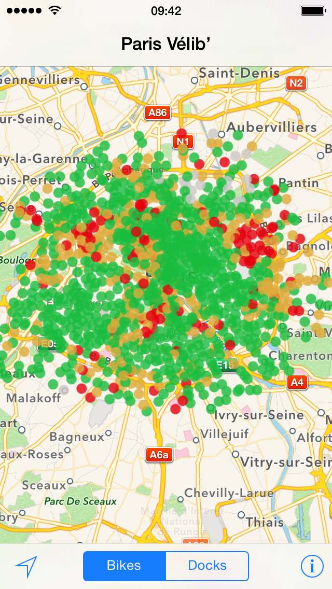
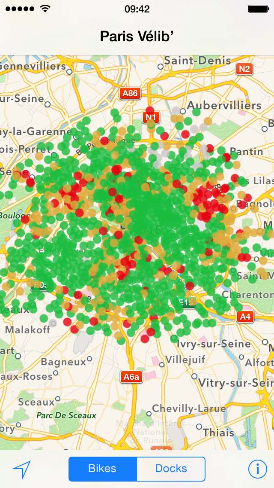

Grab a bike. Go for a ride. Park it in a station.
Bicyclette lets you find the nearest bike, and return it, just as fast as possible.
Bicyclette does exactly one thing: it displays the bike stations on a map, with the number of available bikes and free slots. All you have to do is open the app.
Simply indicate your favorite stations in the app. As soon as you’ll come near a station, Bicyclette will show a message on the home screen, with the number of available bikes and spots.
In fact, you don’t even have to open the app any more!
How does this work? These are "Geofences", a.k.a. "Monitored Regions". You can More Information on the data sources..
Bicyclette works with Bike-Sharing systems in more than 50 cities in the world. Bicyclette uses the data from the Bike-Sharing Operators, available via their website or opendata webservices. Plus de détails sur les sources de données.
By email at support@bicyclette-app.com or on Twitter: @bicycletteapp.
Designed in Paris by Nicolas Bouilleaud